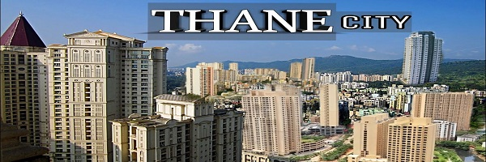

Thane is a city just outside Mumbai, in the western Indian state of Maharashtra. Known as the "City of Lakes," it features more than 30 lakes, including the tree-lined Upvan Lake, a popular recreational spot. Beside Talao Pali Lake, Kopineshwar Mandir is an old, domed Hindu temple dedicated to Lord Shiva. To the west, leopards, monkeys, and parakeets inhabit the teak forest and bamboo groves of Sanjay Gandhi National Park.